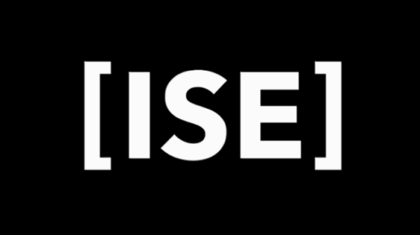

Fushi
My brother and I built a Mandarin learning platform around one question: what do learners still remember when they come back? We reached our first 20 beta testers within two weeks of launch.
Explore projectI build software for people who learn. I co-founded Fushi with my brother, engineer at StudyTok and study Immersive Software Engineering at UL.
My brother and I built a Mandarin learning platform around one question: what do learners still remember when they come back? We reached our first 20 beta testers within two weeks of launch.
Explore projectA Python tool that starts with a company website and finds investor relations documents for financial research.
Explore projectIn two weeks, my classmates and I researched, designed and built an end-to-end encrypted file-sharing system with a Python server, a React web app and a Qt desktop client in C++. We designed it so the server could store and deliver files without reading them.
I led the design of the cryptographic flow for sharing files, as well as the OTP flow, and built most of the React client.
Explore projectOur team built a traffic route feasibility tool and placed second at the Gen AI 4 Good Open Incubator at Trinity College Dublin.
Explore project
UL designed ISE with industry collaborators including Stripe co-founders Patrick and John Collison. The course pairs project-based study with residencies inside engineering teams.
For me, that meant moving from benefit booklets at Carelon to a chatbot at Deveire and grid operations at VIOTAS. At VIOTAS I followed one feature all the way from conversations with users to a working page in Site360.
Explore ISE at UL ↗